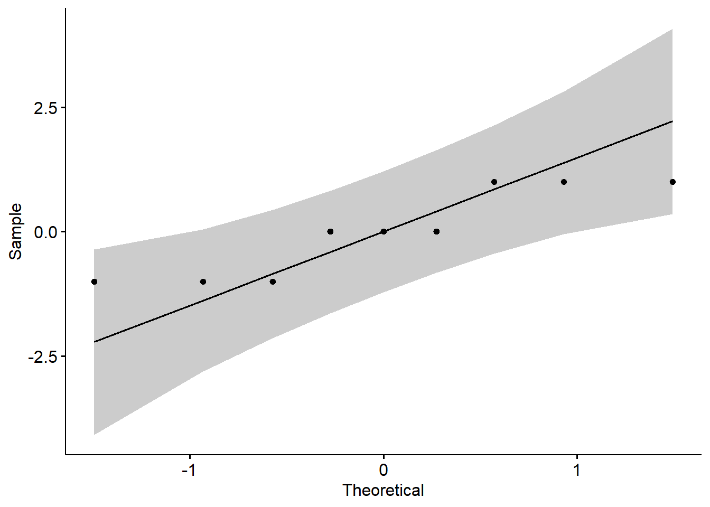
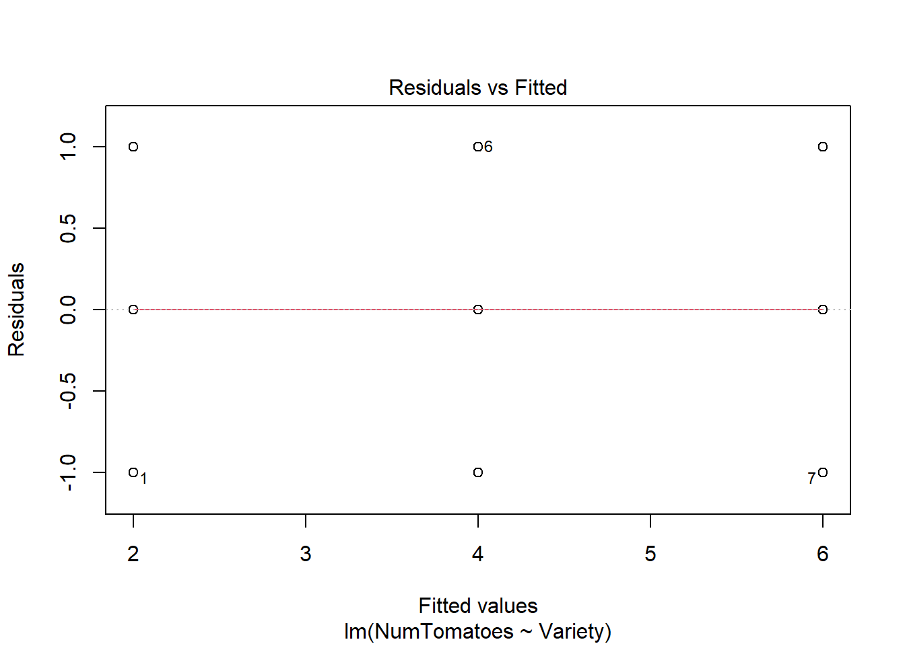

Checking assumptions
Perhaps the first step in doing an ANOVA is to test the different assumptions. But I decided to leave that for last in this chapter, so we could get to understand what the ANOVA is meant to do first.
Outliers
Outliers can be easily identified using box plot method we used early but spotted mathematically with the R function identify_outliers() [from the rstatix package].
## [1] Variety NumTomatoes is.outlier is.extreme
## <0 rows> (or 0-length row.names)The result of this function yields zero rows meaning that there were not outliers in our database. Should there be outlier, it is recommended to run the analysis with and without them, to see the level of the effect and for you to make a judgment call on whether to remove them or now, and justify any choice you make.
Normality
The normality assumption can be checked by using one of the following two approaches:
Analyzing the ANOVA model residuals to check the normality for all groups together. This approach is easier and it’s very handy when you have many groups or if there are few data points per group.
To check normality with model residuals, we use QQ plot and Shapiro-Wilk test. QQ plot draws the correlation between a given data and the normal distribution.
# Build the linear model
model <- lm(NumTomatoes ~ Variety, data = Data)
# Create a QQ plot of residuals
ggqqplot(residuals(model))
From the plot abive, you can see that all values are within the confidence limits expected under normality, but some deviations occurred. The data are perfectly normal, when each point falls along the normality line (black line in the plot above).
The second method to check normality uses the Shapiro-Wilk test. This approach might be used when you have only a few groups and many data points per group.
# Build the linear model
model <- lm(NumTomatoes ~ Variety, data = Data)
# run the Shapiro test
shapiro_test(residuals(model))## # A tibble: 1 × 3
## variable statistic p.value
## <chr> <dbl> <dbl>
## 1 residuals(model) 0.823 0.0373This analysis reveals that the data we used is not-normally distributed. In this specific case, it is because we have such a small sample size. And this deviation should not affect our results significantly. Commonly, however, we should transform the data (e.g., applying a log function to each value) to normalize the data. Different data transformations are vailable, and they will need to be run, and tested for normality, before running an ANOVA.
Homogneity of variance
The Homogeneity of variance can be checked by plotting the residuals versus fits valued.

In the plot above, there is no evident relationships between residuals and fitted values (the mean of each groups), which is good. So, we can assume the homogeneity of variances.
One can also use the Levene’s test to check the homogeneity of variances:
## # A tibble: 1 × 4
## df1 df2 statistic p
## <int> <int> <dbl> <dbl>
## 1 2 6 1.85e-32 1From the output above, we can see that the p-value is > 0.05, which is not significant. This means that, there is not significant difference between variances across groups. Therefore, we can assume the homogeneity of variances in the different treatment groups.